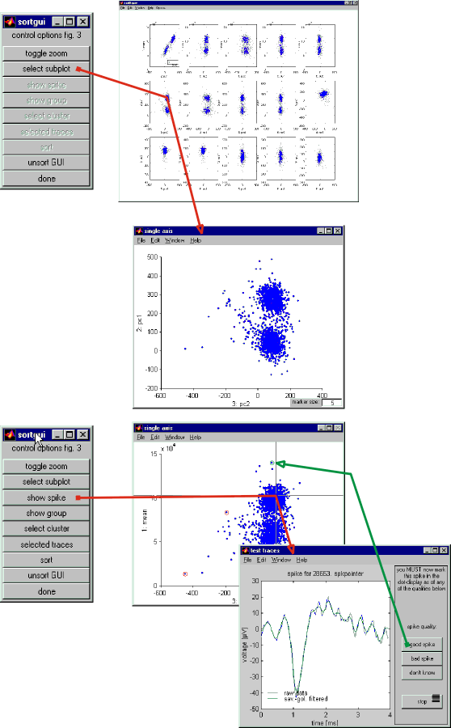

| Pressing run will first open a button window (GUI) and a figure window
with multiple subplots. The GUI holds several control function that will
be enable only when applying them will create a result without producing
errors. This doesn't mean that the results will always be useful or even
correct. For example, if you have displays created by sorting a different
electrode, closed a necessary figure window or changed some of its settings
the results may not be useful.
The multi-subplot figure shows 2D projections of 2 dimensions in the
principle component space. To evaluate the spike shapes and clusters click
on the 'select subplot' button and on one of the subplots.
|
|
| This will enlarge this particular subplot and enable more functions
in the GUI. These allow you to select either individual spikes (i.e. dots)
to display them with 'show spike', display several spikes by delimiting
an area with a polygon ('show group'), or show a certain population
marked in all the subplots ('select cluster'). |
|
Next:
Spike sorting 3/5 - reviewing and
defining clusters I |
 |